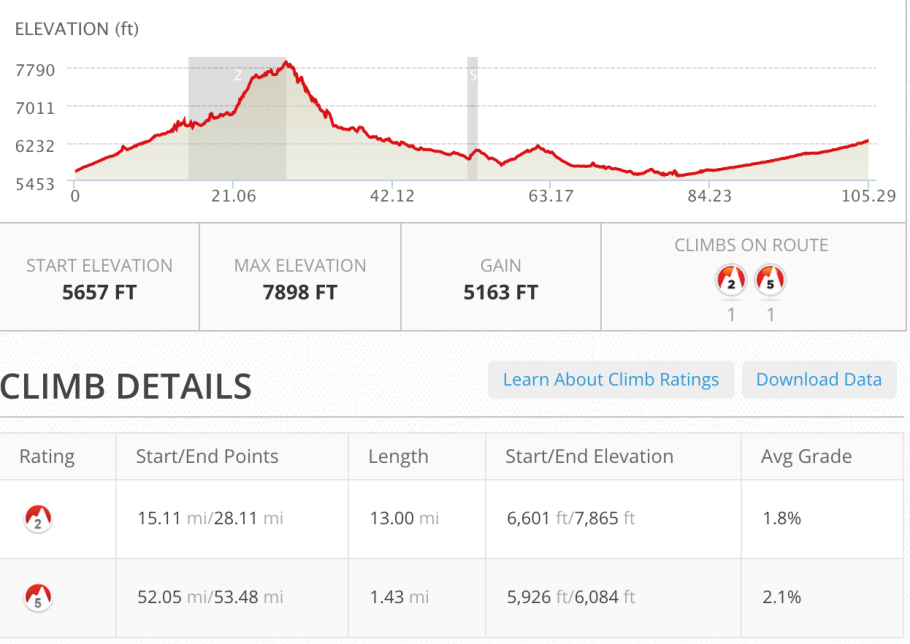
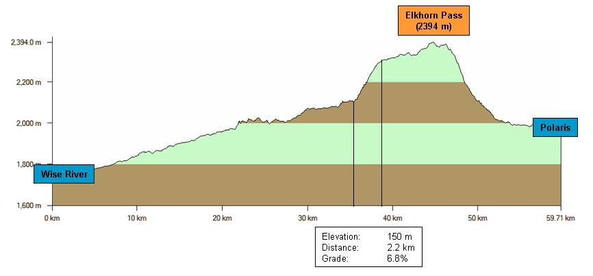
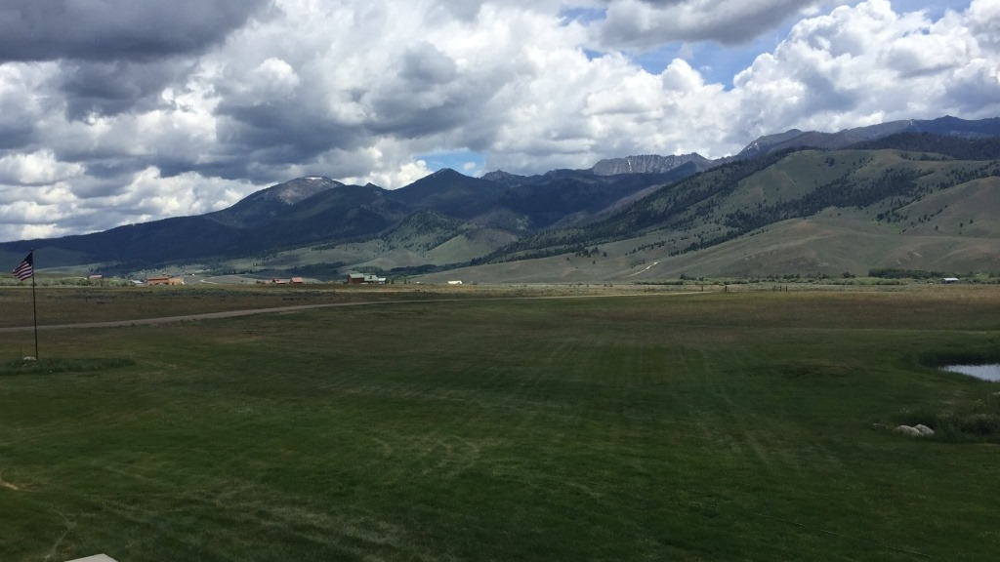
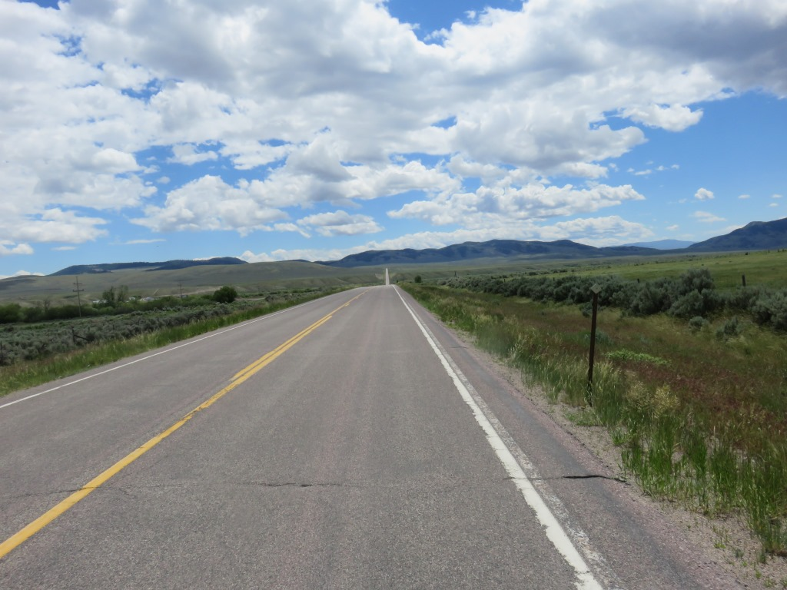
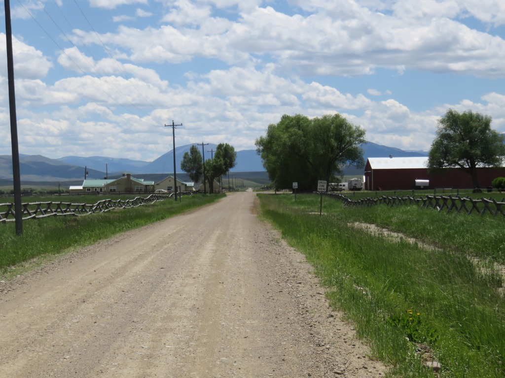
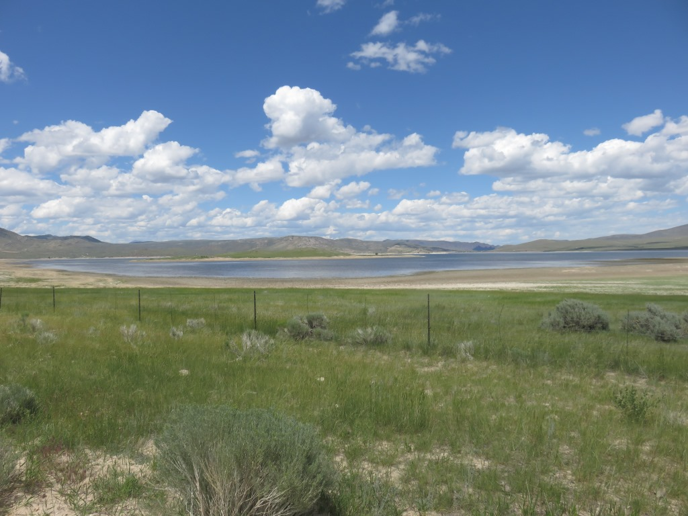
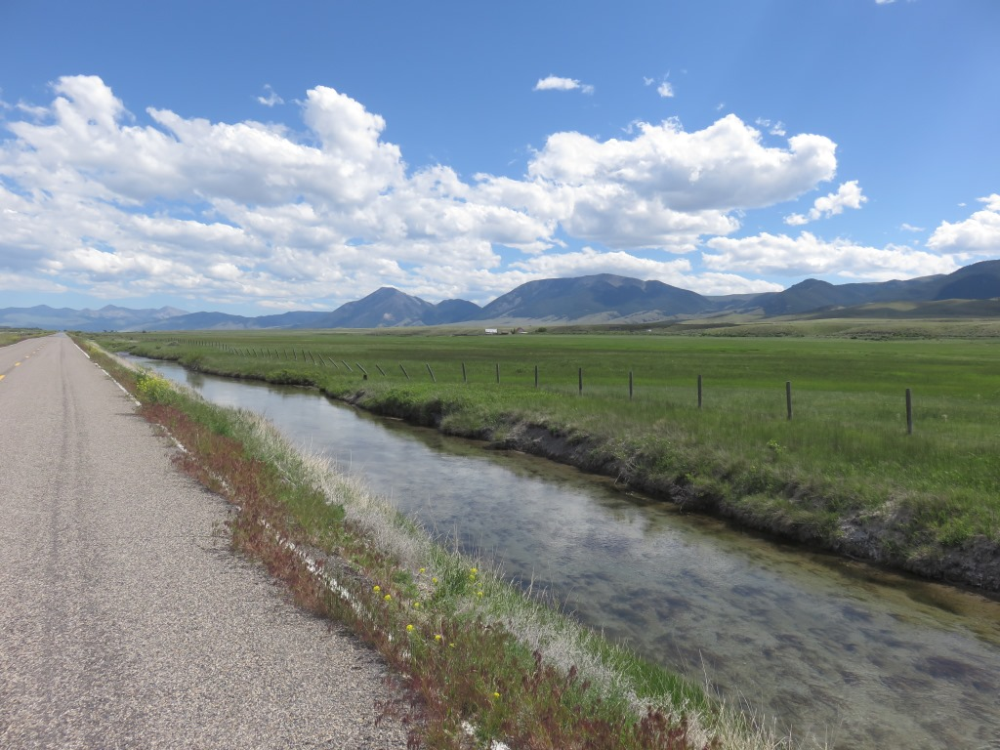

Wise River Headwaters
 The Wise River
The Wise River
The start of the day from the Wise River Club was a big surprise. It was "up". I rode along the river for
almost 20 miles until there wasn't any more river just a marshy meadow. The road was marked as a
National Scenic Byway. It seemed like a good thing and two days further on I would be sold on taking them
instead of some sketchy gravel roads.
I was learning.


I was up early so saw a bit more wildlife along the Pioneer Mtn Scenic Byway

The scene didn't change much until I got up to the top of the meadows where things opened up for a while.

Great Clouds

I didn't see it when taking the pictures but the clouds really did jump out at me
Pioneer Moutains
Some great views to the west with some of the moutains topping 10,000 feet.

Stop on way down from Pioneer Mtns for break and to speak with men in RV from Northern Idaho


The road rambled on here for quite a while.

with some paved and some gravel. Generally an easy ride.

I passed this group of four riders (two shown) early in the afternoon. I would see most of them off and on until the fourth of July. The guy on the left in this picture would finish the race two days after my finish and probably saved the life of the other person in this picture.

Getting to the end of the gravel and back to an area with people even though there wasn't a place to get supplies.

I took a short cut past this reservoir which led me back to Interstate 15 where I stopped for lunch in the underpass. There were lots of sparrows to protect me from the mosquitos and flys. Many times they attacked as soon as you stopped. The birds had built thier nests on the underside of the highway.

Service road along I15. Flat and "railroad grade" which means it wasn't so steep. On the way into Butte two days before I had learned what this meant and it generally meant I could ride up without much trouble but after 20 miles or so it did get to me.

Straight to Dell, MT and then on to Lima
Stopped in Dell which was about 7 miles from Lima. It was hot and I had been out in the open most of the day. Drank a couple chocolate milks and a Gatorade and was on my way for the final push of the day.
Lima, MT
Stayed at the only motel at the edge of town. Did my laundry and compared notes with some Nobos who had riden thru Yellowstone instead of the sandy rail path coming out of the Tetons. I ended up sharing my room with Andrew, from New Zealand, who I had seen earlier that day. The previous night he had camped 20 miles past the Wise River Club. We rode together briefly until he decided to take a 5 mile uphill side trip to visit a ghost town. He also took the road by the reservoir. We had dinner and would end the day in the same places for the next few weeks.
 Best sunset of the trip
Best sunset of the trip
June 22 - 105 miles - Wise River to Lima
See full screen map To go places and do things that I've never done before – that’s what living is all about.Text by Jim O'Brien . Photographs by Jim O'BrienTD on Flickr.